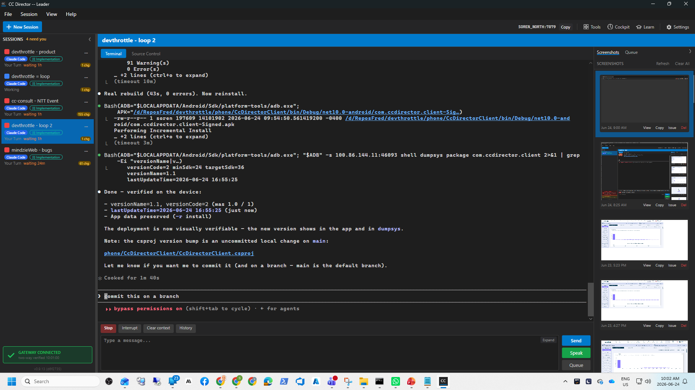

dotnet build cc-director.sln -> Build succeeded, 0 Warning(s), 0 Error(s)dotnet test CcDirector.Core.Tests -> 2364 passed, 0 failed
(6 skipped environment-gated). Update area: 70 passed, including the
10 issue-242 self-heal decision tests + apply-bound tests.cc-director14.exe) and launched; reported a Control API port and a
healthy /healthz (version 0.9.13) - normal startup is visible with a window.| # | Criterion | Expected | Actual (QA-observed) | Evidence | Result |
|---|---|---|---|---|---|
| AC1 | A deliberately-broken build shows a clear error dialog + log path, not a silent no-op. | Startup-path failure surfaces a visible Win32 error dialog and writes a findable crash file with the exception + log path; process does not vanish silently. | Launched the real build down a broken startup path (--apply-update to an invalid
target). A visible modal dialog titled "CC Director - Update failed" appeared
(confirmed by live top-level window enumeration), and a crash file
crash-apply-update-20260624-100142-44976.log was written with the full stack trace
(DirectoryNotFoundException -> SwapWindows -> ApplyUpdate ->
Program.Main). Process exited non-silently. The boot-continuation path adds the same
mechanism: App.HandleFatalStartupError closes the splash and shows a dialog with the
message + log path + crash path (code-verified, identical mechanism). |
qa-ac1-error-dialog.png, qa-ac1-crash-apply-update.log,
qa-ac1-normal-startup-window.png |
PASS |
| AC2 | An update that yields a non-starting build auto-rolls-back to the previous build and tells the user. | With a pending post-update health check for a version the running build never became, and a
non-empty .old backup, startup rolls back to .old, pins the bad
version, shows a "rolled back" dialog, and relaunches the restored build. |
Armed pendingHealthCheckVersion=0.6.11 (running build 0.9.13) with a valid
cc-director14.exe.old. On launch, TryRollBackFailedUpdate fired
(log: "update 0.6.11 never became healthy (running 0.9.13); rolling back ... and pinning the
bad version"), restored the exe from the backup, set pinnedBadVersion: "0.6.11" in
updater-state.json and cleared the pending marker, showed the modal
"CC Director - Update rolled back" dialog, and relaunched the restored build
(a new PID started). Verified twice. |
qa-ac2-rollback-dialog.png + live log lines + on-disk updater-state.json
showing the pin |
PASS |
| AC3 | A second launch while one is running focuses the existing window instead of silently exiting. | The second launch detects the single-instance guard is held, raises the already-running window, and exits 0 - it does not vanish silently and does not start a second instance. | With PID 40404 running, launched the same exe again (PID 6388). The second instance
exited with code 0; only PID 40404 remained. Its own log:
[SingleInstanceGuard] Another instance holds ... ->
[Program] TryRaiseExistingWindow: raised window of PID 40404 ->
[Program] Second launch: raised the already-running window and exited. |
qa-ac3-second-launch-log.txt |
PASS |
| AC4 | A half-applied swap is detected and recovered (or reported) on startup. | An install exe that is missing/zero-length with a non-empty .old present is detected
and restored from the backup, with a user-facing notice, before cleanup deletes the backup. |
Drove the real production methods
(UpdateInstaller.NeedsHalfSwapRecovery /
UpdateInstaller.RecoverHalfAppliedSwap) from a process whose own install exe was made
missing (half-applied swap) with a valid .old beside it.
NeedsHalfSwapRecovery() = True; RecoverHalfAppliedSwap()
returned the notice "CC Director detected a half-finished update and restored the previous
working version so it could start..." and restored the install exe from
.old (back to its full byte length). Negative live case confirmed: a healthy
install + lingering .old does NOT trigger recovery and boots normally (cleanup then
removes the stale .old). |
qa-ac4-halfswap-recovery.txt (real-method output, RESULT=PASS, exit 0) |
PASS |
docs/cencon/ architecture/security manifest change required.MarkCurrentBuildHealthy).AC1 dialog (full-screen capture at the moment the error dialog was up):

AC1 crash file:
See qa-ac1-crash-apply-update.log - DirectoryNotFoundException stack trace through SwapWindows -> ApplyUpdate -> Program.Main, written to the director log directory.
AC3 second-launch log:
See qa-ac3-second-launch-log.txt - TryRaiseExistingWindow raised PID 40404 and exited 0.
AC4 real-method recovery output:
See qa-ac4-halfswap-recovery.txt - NeedsHalfSwapRecovery=True, RecoverHalfAppliedSwap returned the user notice and restored the install exe from .old. RESULT=PASS, exit 0.